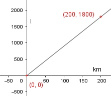

Lineare Funktionen Aufgabe 5 Ein Flugzeug verbraucht auf 200 km 1800 l Kerosin. a) Wie lautet die Funktionsgleichung, die den Verbrauch V abhängig von der Strecke s beschreibt? b) Wie lautet die Funktionsgleichung, die die Strecke s abhängig vom Verbrauch V beschreibt? c) Ergänzen Sie die Wertetabelle für den Graphen der Funktion V abhängig von s. d) Welche Strecke hat das Flugzeug nach einem Verbrauch von 10 000 l zurückgelegt? e) Wie viel l Kerosin verbraucht es für eine Strecke von 6 000 km? a) Das Flugzeug verbraucht 1 800 l/200 km = 9 l/km V in l s in km V = 9 l/km * s b) Das Flugzeug fliegt 200 km/1 800 l= 1/9 km/l 1 s = --- km/l * V 9 c) s in km 0 200 V in l 0 1800  d) V = 10 000 l 10 000 = 9 * s | :9 1111,1 km = s e) s = 6 000 km 1 6 000 = --- * V | *9 9 V = 54 000 l